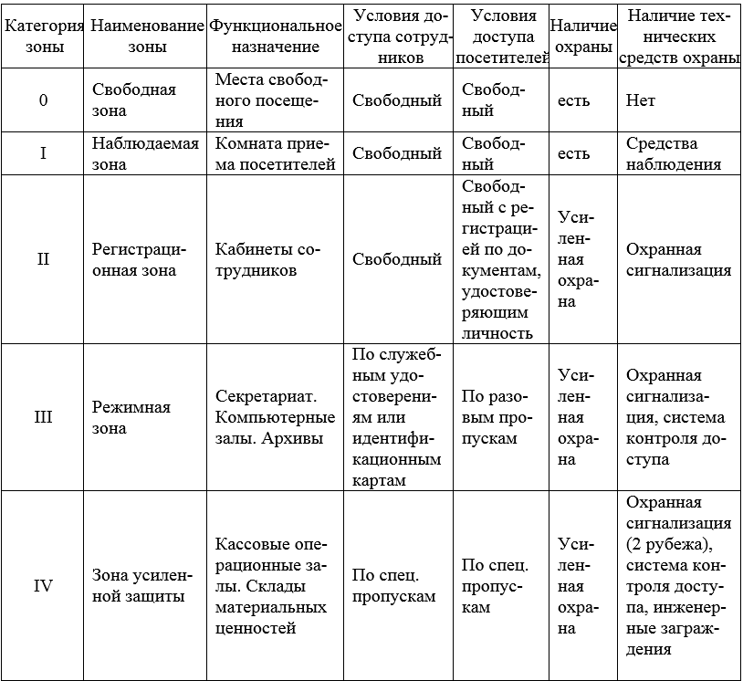
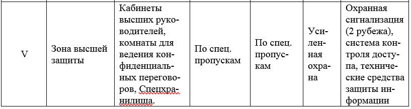

ОПРЕДЕЛЕНИЕ НАЛИЧИЯ ДОПОЛНИТЕЛЬНЫХ ФАКТОРОВ ЗАЩИТЫ ПОМЕЩЕНИЯ
Цели работы:
1. Научится определять наличие дополнительных факторов защиты иссле-дуемого помещения
Теоретические сведения:
Пожарная и охранная система безопасности. Следующим пунктом нуж-но определить дополнительные меры защиты для определенного рода помеще-ний: дополнительные внутренние датчики любых типов (могут использоваться для создания дополнительных рубежей защиты особо важных помещений внут-ри помещения). При выполнении практической работы также необходимо учесть наличие дополнительных устройств внутри отдельных помещений: оборудова-ние пищевой промышленности, фальшполы (фальшпотолки), станки, средства вычислительной техники, сервера. Данные устройства должны быть отражены в экспликации к помещению в выходном документе. Необходимо выбрать мини-мум 5 различных категорий устройств для различных помещений.
СКУД. Для специализированных помещений определить дополнительные факторы защиты помещений (если таковые необходимы).
Приведение помещений к одной из категорий режимности помогает регла-ментировать и обосновать:
- условия доступа сотрудников предприятия и посетителей на объект, определить общедоступные, закрытые и ограниченного доступа объекты, здания, помещения;
- предложения администрации предприятия по выработке оптимально-го варианта разрешительного порядка пропуска лиц, транспортных средств и ма-териальных ценностей на объект;
- наличие и вид физической охраны;
- виды используемых технических средств для обеспечения безопас-ности.
Ниже представлена таблица 1 уровней доступа к различного рода помеще-ниям.
Таблица 1 – Уровни доступа к различным помещениям функциональной пожарной опасности


Практическая часть:
1. Определить наличие дополнительных факторов защиты помещения от пожара.
2. Определить наличие дополнительных факторов защиты помещения от кражи.
3. Определить наличие дополнительных факторов защиты помещения от несанкционированного проникновения.
4. Оформить отчет
Содержание отчета:
1. Титульный лист.
2. Цель работы.
3. Вариант задания.
4. Ход работы с пояснениями.
5. Выводы по работе.
Контрольные вопросы:
1. Какие дополнительные факторы защиты помещения вы знаете?
2. Перечислите уровни доступа к помещению.
3. Какими дополнительными факторами защиты пожарной безопасности обладает ваш объект?
4. Какими дополнительными факторами защиты охранной безопасности обладает ваш объект?
5. Какими дополнительными факторами защиты СКУД обладает ваш объ-ект?